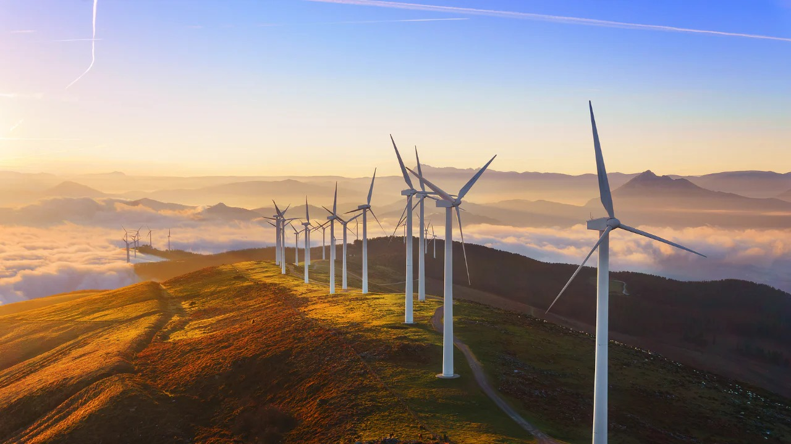

El departamento del Cesar, ubicado en el norte de Colombia, cuenta con un enorme potencial para el desarrollo de energías renovables. Gracias a su alta radiación solar y zonas con excelente régimen de vientos, especialmente en áreas como la Serranía del Perijá, se posiciona como un territorio clave para impulsar un futuro energético limpio y sostenible. Estas condiciones naturales ofrecen una oportunidad estratégica para diversificar la matriz energética del país, promover el desarrollo regional y avanzar hacia una transición energética basada en fuentes limpias y amigables con el medio ambiente.
Aquí puedes ver algunos videos que explican cómo funciona la energía solar y eólica, y cómo benefician a nuestras comunidades en La Guajira.
Solar: Con más de 300 días de sol al año, Chiquimula es ideal para instalar sistemas de energía solar fotovoltaica, tanto residenciales como comerciales.
Eólico: Las zonas montañosas del departamento presentan condiciones favorables para la energía eólica, con vientos constantes y velocidades adecuadas para turbinas de generación.
⬅ Volver al inicioLa adopción de energías renovables en el departamento del Cesar ofrece importantes ventajas para sus comunidades y el desarrollo regional: